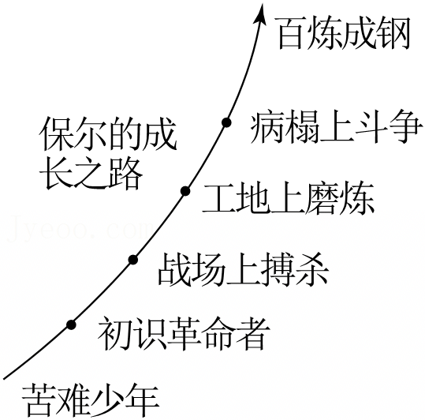

石家庄市第四十二中学 2024—2025 学年第二学期期中考试
初 一 语 文
学校： 班级： 姓名：
第一部分（18分）
1．（3分）下列词语中加线字的读音完全正确的一项是（ ）
A．字帖（tiè） 殷红（yān） 召唤（zhào） 锋芒毕露（lù）
B．晌午（shǎng） 祈祷（qí） 惶恐（huáng） 鲜为人知（xiān）
C．惩罚（chěng） 卓越（zhuó） 诘问（jié） 妇孺皆知（rǔ）
D．侮辱（wú） 粗拙（zhuó） 憎恶（zēng） 气冲斗牛（dǒu）
2．（3分）下列词语中没有错别字的一项是（ ）
A．屏嶂 选聘 照像机 大庭广众
B．深宵 取缔 订书机 铤而走险
C．高粱 烦燥 斑马线 鞠躬尽瘁
D．萦绕 振悚 明信片 深恶痛觉
3．（3分）下列各句中，成语运用不恰当的一句是（ ）
A．一个作家不只要有才华，更要有悲天悯人的胸怀，才能写出伟大的作品。
B．托尔斯泰长着这么一张脸，不管从事什么职业，穿什么服饰，也不管在什么场合，都不会有一种鹤立鸡群的可能。
C．小华在期中考试中取得了好成绩，他特别激动，诚惶诚恐地把这个消息告诉了爸爸妈妈。
D．老人从这个小女孩的眼睛中看到了无与伦比的美和更大的力量。
4．（3分）下列句子没有语病的一项是（ ）
A．由于受阴雨天气影响，使得部分地区的天文爱好者没能欣赏到“金星凌日”的奇观。
B．《校车安全管理条例》的实施，可以有效避免校车交通安全事故不再发生。
C．青少年学生正是迷恋书籍，对百科知识孜孜以求的阶段。
D．4月23日是世界读书日，我市图书馆迎来了自开馆以来的第一个借阅高峰。
5．（3分）依次填入下面横线上的语句，衔接最恰当的一项是（ ）
绿茶茶艺表演的第九道程序是“春波展旗枪”。 似乎是有生命的绿精灵在跳舞，十分生动有趣。
①尖尖的叶芽如枪，展开的叶片如旗。
②杯中的热水如春波荡漾，在热水的没泡下，茶芽慢慢地伸展开来。
③这道程序是绿茶茶艺的特色程序。
④千姿百态的茶芽在玻璃杯中随波晃动。
⑤直直的茶芽称之为“针”，弯曲的茶芽称之为“眉”，蜷曲的茶芽称之为“螺”。
A．①②④③⑤ B．①④③⑤② C．③②①⑤④ D．③②④①⑤
6．（3分）下列文化常识的表述不正确的一项是（ ）
A．《孙权劝学》选自北宋司马光主持编写的编年体通史《资治通鉴》，文中的“卿”是古代君对臣的爱称，朋友、夫妇间也以“卿”为爱称。
B．《木兰诗》是南北朝时期北方的一首乐府民歌，后被收录在郭茂倩编的《乐府诗集》中。文中的“可汗”是我国古代西北地区民族对最高统治者的称呼。
C．欧阳修是南宋文学家、政治家，唐宋八大家之一，后人将其与韩愈、柳宗元、苏轼合称为千古文章四大家。
D．《阿长与＜山海经＞》是《朝花夕拾》中的名篇。《朝花夕拾》是鲁迅回忆童年、少年和青年时期不同生活经历与体验的散文集。
第二部分（42分）
7．（8分）默写。
与古诗文邂逅是一场美丽的遇见，这场遇见，我们触摸到诗人的情怀：《逢入京使》中诗人遥望故乡，想到亲人远隔，泪雨滂沱，（1） ， 。《竹里馆》中诗人发挥自己新颖而独到的想象力，表达自己僻居深林之中也并不感到孤独（2）“ ， ”。李商隐借古讽今，在《贾生》中（3） ， 。寄寓自己怀才不遇的感慨；《过松源晨炊漆公店》中杨万里用（4）“ ， ”告诉我们最好不要为眼前的顺境所迷惑，要放眼长远，认真对待，才能不断克服困难。不同味道勾兑不同人生，让我们浸润于古诗文中，尽情感受百味人生吧！
8．（6分）阅读下面诗歌，回答问题。
春夜洛城闻笛 唐 李白 谁家玉笛暗飞声，散入春风满洛城。 此夜曲中闻折柳，何人丕起故园情。 | 泊秦淮 唐 杜牧 烟笼寒水月笼沙，夜泊秦淮近酒家。 商女不知亡国恨，隔江犹唱后庭花。 |
（1）下面对这两首诗的赏析有误的一项是
A.“散入春风满洛城”，“满”字运用夸张的修辞手法，极写夜之宁静，笛之悠扬，反衬诗人内心闻笛后的孤寂心情。
B.《春夜洛城闻笛》全诗紧扣一个“闻”字，抒写自己闻笛的感受，表现吹笛人技艺的高超。
C.《泊秦淮》是一首七言绝句，题目“泊秦淮”交代了诗人停泊船只的位置。
D.“烟笼寒水月笼沙”是环境描写，描绘了一幅凄迷的夜景图，为下文抒情作铺垫。
（2）两首诗画线句都选用“曲名”抒情，请说说其抒发的情感有何不同。
9．（10分）阅读下面两篇文言文，回答问题。
卖油翁
欧阳修
陈康肃公善射，当世无双，公亦以此自矜。尝射于家國，有卖油翁释担而立，睨之久而不去。见其发矢十中八九，但微颔之。
康肃问曰：“汝亦知射乎？吾射不亦精乎？”翁曰：“无他，但手熟尔。”康肃忿然曰：“尔安敢轻吾射！”翁曰：“以我酌油知之。”乃取一葫芦置于地，以钱覆其口，徐以杓酌油沥之，自钱孔入，而钱不湿。因曰：“我亦无他，惟手熟尔。”康肃笑而遣之。
伤仲永
王安石
金溪民方仲永，世隶耕。仲永生五年，未尝识书具，忽啼求之。父异焉，借旁近与之，即书诗四句，并自为其名。其诗以养父母、收族为意，传一乡秀才观之。自是指物作诗立就，其文理皆有可观者。邑人奇之，稍稍宾客其父，或以钱币乞之。父利其然也，日扳仲永环谒于邑人，不使学。
余闻之也久。明道中，从先人还家，于舅家见之，十二三矣。令作诗，不能称前时之闻。又七年，还自扬州，复到舅家问焉。曰：“泯然众人矣。”
（1）下列句中加线词解释有误的一项是
A.以我酌油知之 | 以：介词，凭，靠 |
B.于舅家见之 | 于：介词，在 |
C.释担而立 | 释：放下 |
D.邑人奇之 | 奇：神奇 |
（2）翻译下列句子。
①康肃忿然曰：“尔安敢轻吾射！”
②自是指物作诗立就，其文理皆有可观者。
（3）有人认为“天赋决定人生”，也有人认为“努力比天赋更重要”。请结合甲乙两文，谈谈你的看法。
10．（13分）现代文阅读。
微弱的光亮
黄海子
①晚上7点，我在盘山公路上开着车。山路上的雾浓得化不开，车子像一只蚂蚁掉进了装满牛奶的杯子。车的灯光在大雾里，照不见一米开外的物体。而一团一团的雾在灯光里缓慢地翻滚着，仿佛众多的棉絮在亮光中漫舞。
②我们此行的车上共有三人。我把车停在路边，下了车，坐在副驾驶的大姐也随我下了车。“这天气真是的……”大姐说。“要不我们回吧？这大雾硝实不能再往前了。”我对大姐说，大姐沉默着。
③没有风，路边看不见的树滴滴答答地滴着水。公路上除了我这辆车，再没有车驶过。我感觉浓雾里那些细小的雾的颗粒，慢慢地钻透我的衣服，贴上我的皮肤，我感觉到了隆冬才有的寒冷。而滴答的水声，让整个夜显得孤寂又没有生气。
④大姐是我不久前才认识的，60岁左右，人清瘦但很精神，我们同在一个助学群里。我们此行是去山里的一所学校开展调查，调查那里有多少孩子需要资助。
⑤我们在小镇上吃午饭的时候，同行的另一个人告诉我，他是冲着大姐的“精神”才来参加这次活动的。他说，大姐早就退休了，老公走得早，孩子在国外生活，接她去国外定居，她去了不喜欢那边的生活，一个人跑回国来了。跑回来的原因还有一个，她想聚一帮人，在她有生之年；资助一些需要资助的学生。
⑥车上的人见我和大姐有一阵没说话了，使放下车窗喊我们：“大姐，你们两个上车来商量。”我和大姐上了车。
⑦大姐问我：“导航上我们离目的地还有多远？”我说：“还有5公里国道、3公里村道。要是没有雾，要不了多少时间就能到达。”同行的另一人搭话：“我们往回走，到镇上有多远？”我说：“距离与到目的地差不多。”大姐见我们都想要返回，急忙说：“不能返回！”我和同行者异口同声地问：“为什么？”大姐说：“两个原因。一是我们出发前给学校的老师打了电话，叫他把需要资助的孩子和孩子家长都叫到了学校。山里孩子的家离学校都不近，答应了他们，就要守信。还有一个原因，明天一早我们还要去别的地方调查，我们拖一天，其他学校的孩子就会多一天期盼。”
⑧大姐说完沉默了一会儿，转过身对坐在后面的同行者说道：“你不会开车，我虽然会开，但是眼睛不好，这样吧，我们两个下车去用手机电筒给车照路，连着车灯的光，我想应该看得见路，我们能早些到。”然后对着我说：“你慢慢开车跟着我俩，你看如何？”
⑨我不同意，决意要大姐开车。最后大姐生气地说：“我知道你为我好，可是我眼睛真的不行了，从车玻璃看出去只看得到雾，一点路面都看不到，所以这车必须得你开。”
⑩正当大姐和同行者下车准备给我照路的时候，大姐的电话响了。是学校那边打过来的。大姐在电话里说：“不用不用。我们在公路上，雾是很大，我们开得慢，麻烦你们多等我们一会儿，不用来接我们，更不用来给我们照亮，我们开慢些就行，我们一定会到……”大姐接完电话，就下车给我照路去了。
⑪我随着大姐的身影，慢慢地开车往前行。凭脚下加油的力度，我断定我们到了一个很陡的上坡路。突然，我看见大姐的身子一晃，整个人栽倒下来，朝着车头滚了过来。我吓得有些手足无措，急忙停车去查看状况。准备扶大姐的时候，她自己却站起来，嘴里嘟哝着：“这该死的石子，我踩石子上了，溜了脚。”
⑫大雾里，大姐身裹雾气，拍了拍身子，倔强地继续探路。在她拍身子的时候，那些裹在她身上的雾变得缥缈起来。
⑬我刚上车，恍惚听到了呼喊大姐名字的声音。再仔细听，是很多声音在呼喊大姐。慢慢地，有微弱的光亮从陡玻往下缓缓下来。先是昏黄的几颗，然后是昏黄的裹着雾的大团，继而是几大束，在雾气里格外明了。
⑭是老师、学生、学生家长来接我们了。那段被雾埋没的路，一下子就明亮宽敞起来，我的眼睛却因为他们的到来而模糊了……
⑮多年后，大姐在大雾里说的一句话，一直像那‘天大雾里的微光一样照亮我前行的路。
⑯她说：“哪怕微弱得只有丁点的光亮，连起来，就能照亮人前行。”
（1）通读全文，说说题目“微弱的光亮”的含义。
（2）第⑤段从记叙顺序上来看属于 ，其作用是 。
（3）简要概括文中大姐形象的主要特点。
（4）比较阅读下面两段文字，完成表格。
环境描写 | 主要作用 | 探究小结 |
山路上的雾浓得化不开，车子像一只蚂蚁掉进了装满牛奶的杯子。车的灯光在大雾里，照不见一米开外的物体，而一团一团的雾在灯光里缓慢地翻滚着，仿佛众多的棉絮在亮光中漫舞。 | ① | ②请对如何写好环境描写提出一点建议。 |
天上闪烁的星星好像黑色幕上缀着的宝石，它跟我们这样的接近哪！黑的山峰像巨人一样矗立在面前。四围的山把这山谷包围的像一口井。（节选自《老山界》） | 交代时间是夜晚，写出星空的灿烂美丽和山势的险峻，暗示了红军的艰难处境，烘托出作者的乐观主义精神。 | |
11．（5分）我校开展了“阅读绘青春”经典重读活动，请你阅读以下经典文段，完成任务。
青春获得了胜利。伤寒没能夺走保尔的生命。这已是他第四次死里逃生。卧床一个月之后，苍白消瘦的保尔已能够勉强站起来，颤巍巍地扶着墙壁，试着在房间里走动了。他让母亲搀扶着走到窗口，向街上望了很久。雪已开始融化，雪水汇成的小水洼在阳光下闪闪发亮。外面已经是冰雪消融的早春天气了。
（节选自《钢铁是怎样炼成的》第二部第三章）
（1）选段中说的“第四次死里逃生”，与“保尔的成长之路”导图中对应的一个阶段是 （填写字母）

A.初识革命者
B.战场上搏杀
C.工地上磨炼
D.病榻上斗争
（2）同学们在经典阅读过程中主动将所学名著前后勾连起来比较，以下是他们的研究成果。请你相互参照，完成A、B两项任务。
理一理故事情节 |
《骆驼祥子》 | 《钢铁是怎样炼成的》 |
①省吃俭用攒钱准备买车，攒的钱被孙侦探夺走。 ②攒钱买了一辆车，连人带车被大兵抓去。 ③虎妞帮祥子买车，后置办虎妞的丧事卖车。 A正确顺序： （填序号） | ①激战中被炮弹击中头部。 ②筑路时，得了伤寒并引发了肺炎。 ③为救朱赫来被抓入狱，后被错放。 ④偷居住在邻居家德国中尉的枪，用破布裹好后藏在烧砖炉靠里面的角落里，用旧砖块堆成锥形覆盖好。 B正确顺序： （填序号） |
第三部分（40分）
12．（40分）阅读下面材料，按照要求作文。
生命中的遇见总是能够引发我们的万千感慨。吕蒙遇见孙权，孙权以远见点醒迷津，让赳赳武夫蜕变为学识通达的儒将；迅哥儿遇见了《山海经》，如遇着了一个霹雳似的开启了一个奇幻的世界；光未然遇见了黄河，胸腔里澎湃起万丈家国情……遇见的，也许是一个人，也许是一本书，也许是一处曼妙的风景……正是人间四月天，值此芳菲时节，请你执笔记下生命里那次动人的遇见吧！
请以“遇见”为题目，写一篇文章。
要求：①文章思想健康，内容充实，感情真挚；②不要套作，不得抄袭；③除诗歌外，文体不限；④字迹工整，书写规范，不少于600字；⑤请不要出现真实的姓名、班名。